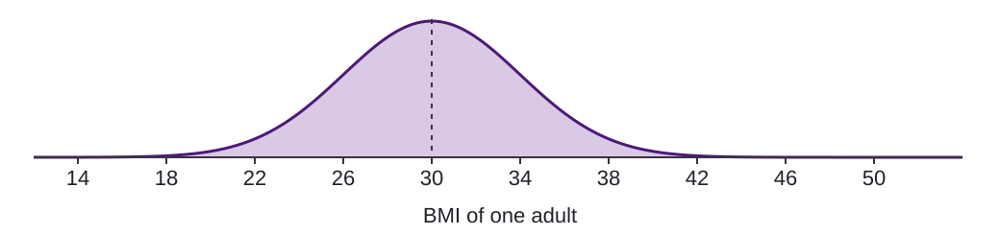
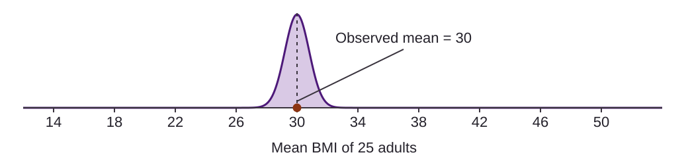
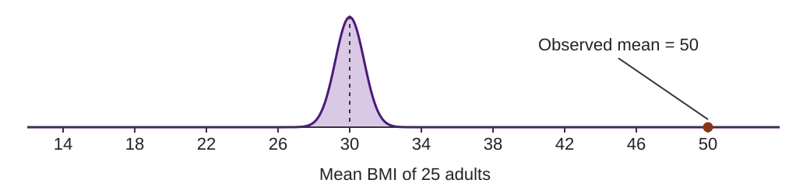

Imagine the average BMI of all adults in Texas is 28. We draw a simple random sample and get 30.
Draw Another Sample
Same population. Same sample size. This time we get 26.
How Far Are We From the Truth?
We observed 30. What would we need to know to work out the sampling error?
Suppose the Population Looked Like This
Imagine BMI in the population follows a normal distribution with mean 30 and SD 4.

What sample means would you expect if you drew 25 adults at random, over and over?
Would a Sample Mean of 30 Surprise You?

Here each draw gives us a mean of 25 adults. Under our assumptions, the means center on 30 and their standard error is 4/√25 = 0.8.
What if the Sample Mean Were 50?

How surprising would this result be? What might you check before drawing a conclusion about the population?
Statistical Hypothesis Testing
State a claim about the population and what would count as a departure from it.
Choose a significance level, α, before looking at the results.
Use a statistical model to work out which results we would expect if the claim were true.
Compare our result with that expectation using a test statistic and a p-value.
Does Mean StressScore Differ From 20?
Null hypothesis, H₀: The population mean StressScore equals 20.
Alternative hypothesis, H₁: The population mean StressScore differs from 20.
Before seeing the data, set α = .05. A two-sided test treats departures above and below 20 as evidence against H₀.
How Far Is Our Estimate From 20?
A sample mean two standard errors above 20 gives t = +2. A mean two standard errors below 20 gives t = −2.
Under H₀, how often would a random sample give a t statistic at least this far from zero in either direction?
Question: What Does a p-Value of .03 Mean?
A two-sided test of H₀: μ = 20 gives p = .03. Which interpretation fits?
A. There is a 3% chance that the population mean equals 20.
B. If H₀ and the model assumptions hold, about 3% of repeated samples would give a test statistic this far from zero or farther.
C. About 3% of individual students have a StressScore this far from 20.
The workbook contains 100 simulated studies of 20 students each. We generated the scores from a normal population with mean 20 and SD 4. Each study tests H₀: μ = 20.
Predict with a partner: Will all 100 studies fail to reject H₀?
Work Through Sample 1
Use the scores in B13:B32. Fill in the mean, sample SD, and SE in E14:E16.
Use the supplied t critical value in E20. Enter the lower and upper CI limits in E21:E22.
Compare your answers with row 37. Does the interval include 20? What decision does the two-sided p-value support?
The workbook lists the five Excel formulas beside the data.
Find Two Studies That Lead to Different Decisions
At α = .05, use rows 37–136 on the Activity tab.
Find one interval that includes 20 and one that misses 20.
For each, record the sample number, CI, p-value, and decision.
Explain to your partner why the CI and the test agree.
Change Alpha and Count the Rejections
Record the counts at .05. Predict what will happen at .01, then at .10.
Change B7 each time. Record the number of intervals containing 20 and the number of rejections in J5:K7.
Which quantities changed? Which stayed the same? Why is every rejection in this workbook a Type I error?
Suppose the True Mean Were 22
We still test H₀: μ = 20, but imagine drawing our samples from a population with mean 22.
Our decision
What happened in this population?
Reject H₀
We detected the difference.
Fail to reject H₀
We made a Type II error.
Power is the probability of detecting this specified difference across repeated studies. If the probability of a Type II error is β, power is 1 − β.
Question: Which Study Has More Power?
Both studies test μ = 20 at α = .05. The true mean is 22, and the population SD is 4 in both.
A. The study that samples 20 students.
B. The study that samples 80 students.
C. Both studies have the same power.
What happens to the standard error when the sample size quadruples?
Back to Sleep and Stress
For the 20 students in our November 2 practice workbook, we found r = −.834 and r² = .696.
A two-sided Pearson test of H₀: ρ = 0 gives p < .001.
What does r tell us about sleep and stress? What question does the p-value answer?
How Much Does a Significant Difference Matter?
On a 100-point scale, Group A scored 0.4 points higher on average than Group B.
The 95% CI for the population mean difference (A − B) is 0.1 to 0.7 points.
What value would represent equal population means? What decision would the corresponding two-sided test give at α = .05?
What would you need to know to decide whether the difference matters to students?
Prep 4: Find Your Assigned Variables
Groups
Correlation
Mean comparison
Categorical comparison
1, 3, 5
SleepHours and StressScore
StressScore by ActivityLevel
StressCat and CaffeineUse
2, 4
ScreenTimeHours and AnxietyScore
AnxietyScore by SocialSupport
AnxietyCat and MindfulnessPractice
Work with your project group. Groups 1–2 use dataset A, groups 3–4 use B, and group 5 uses C.
Write Three Pairs of Population Hypotheses
Use your group’s variable names in each H₀ and H₁.
Correlation: What would zero population correlation mean for your two continuous variables?
Mean comparison: What does H₀ say about the population means across all three levels of your grouping variable? What would be enough for H₁?
Categorical association: What would independence mean for your two categorical variables?
The 12 students had a mean StressScore of 21.00. The 95% CI for the population mean is 18.69 to 23.31 points.
Use the interval alone to test H₀: μ = 20 against H₁: μ ≠ 20 at α = .05. Write your decision and one sentence explaining it in context.
Apply the Same Reasoning to Your Group
Assigned outcome
Hypothetical population norm
StressScore
20
AnxietyScore
10
Name your outcome and norm. For your own data, report n, mean, sample SD, and a two-sided 95% t interval. Use its width to discuss precision and its limits to explain your decision.
What would happen to precision with a larger sample if variability stayed the same?
Exit Check: Which Value Belongs in Each Interval?
The 95% CI for mean StressScore is 18.7 to 23.3. We are comparing the mean with the Prep 4 stress norm.
The 95% CI for the difference in mean StressScore (A − B) is −2 to 6. We are comparing two group means.
For each interval, write the reference value and your decision at α = .05. Be ready to explain why the reference values differ.